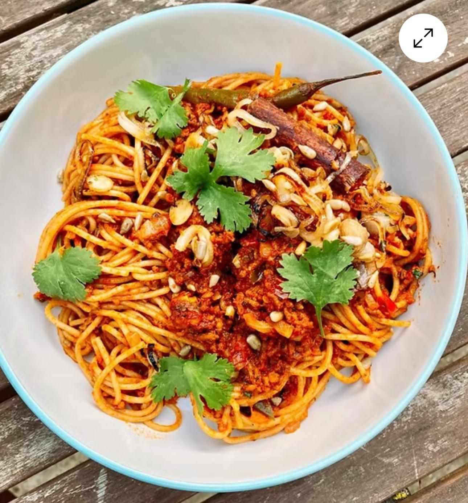
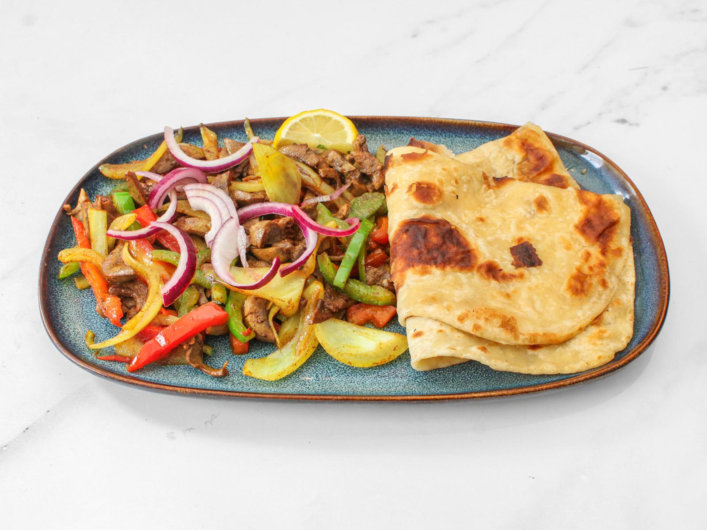

Basbaas is SE18 London's newest Somali dining destination — a modern setting and bold, authentic flavours inspired by the Horn of Africa.
Basbaas was born from a simple belief: that Somali food — generous, aromatic and deeply comforting — deserves a place at London's table. We built a calm, modern room in SE18 and filled it with the recipes, spices and hospitality we grew up with.
Every dish is made fresh, from scratch, using exceptional ingredients. Whether you're new to Somali cuisine or a longtime fan, this is where tradition meets excellence.

Traditional Somali recipes passed down through generations — canjeero, suqaar, haniid and shaah, exactly as they should be.
Made from scratch, every day. Nothing pre-made, nothing rushed — just exceptional ingredients treated with care.
A warm welcome, a friendly host, and the kind of generosity that makes first-timers feel like regulars.
"Basbaas" is the Somali word for chilli — and our signature sauce is the soul of the kitchen. Fiery, fragrant and made in-house, it's the thread that runs through everything we cook. Ask for it mild, medium or hot.

"Beautiful food, beautiful restaurant, beautiful humans, beautiful community."
Located in SE18, London. Dine in. Savour the flavour. Come back for more.